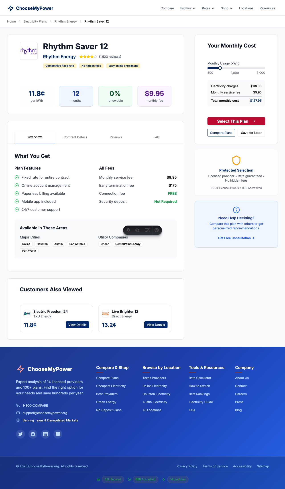
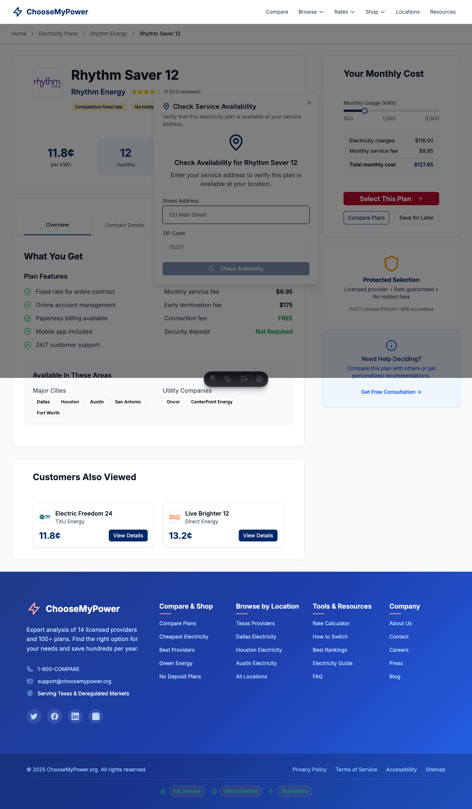

Address Search Modal Flow Test Report
Timestamp: 2025-09-03T23:08:13.405Z
Overall Result: FAILURE
Final URL
URL:
Parameters Found
Test Steps
Step 1: Plan page loaded successfully
Status: success
Screenshots
01_plan_page_loaded.png

error_screenshot.png

Errors
- page.waitForSelector: Timeout 10000ms exceeded.
Call log:
�[2m - waiting for locator('[data-testid="address-search-modal"], .modal, .address-modal') to be visible�[22m